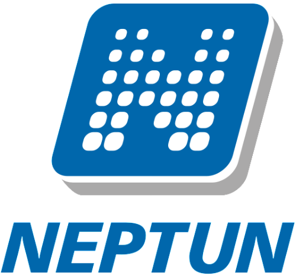

A Neptun.NET projektA Neptun.NET Egységes Tanulmányi Rendszer szoftver a magyar felsőoktatási intézmények (egyetemek, főiskolák) tanulmányi és pénzügyi adminisztrációját, oktatási, oktatás-szervezési feladatainak regisztrálását és információs rendszerét látja el. 2014-ben egy kormány általi megrendelés alapján a Nemértünksemmihez ZRT. nyerte el a pályázatot. Ekkoriban énis ennek a cégnek dolgoztam és részt vettem a felhasználói felület fejlesztésében. Tulajdonképpen a rááldozott pénzből többet is kihozhattunk volna de úgy voltunk vele, hogy mekkora poén már ha nem működik rendesen. A szerver egy Guatemalai tanya pincéjében van úgyhogy ha egyszerre több mint 10 ember próbál bejelentkezni akkor összeomlik a rendszer. Igazából nehezebb volt ennyire rossz rendszert csinálni mint normálisan, de mi legalább jól szórakoztunk. |

|
Az örökmozgó projektAz örökmozgó (perpetuum mobile) olyan hipotetikus gép, amit ha egyszer beindítunk, örökké mozgásban marad, miközben nem von el energiát a környezetétől, és a belső energiája is állandó szinten marad. Az elsőfajú örökmozgó olyan gép, ami több munkát végez, mint amennyi energiát felvesz a környezetétől. Egy ilyen gép hatásfoka nagyobb, mint 100%. A másodfajú örökmozgó olyan gép, ami a környezetéből felvett hőenergiát veszteségek nélkül munkavégzésre tudja fordítani. Egy ilyen gép hatásfoka pontosan 100%. 2019 nyarán miután leérettségiztünk, tudományos érdekeltségű csapatommal nekiálltunk fejleszteni egy örökmozgót, úgy gondoltuk lehetséges. Bizonyítani nem sikerült hogy valóban örökmozgó e, ugyanis azóta is várjuk hogy megálljon. |
|
Copyright © 2020 All Right Reserved | Borhy Levente